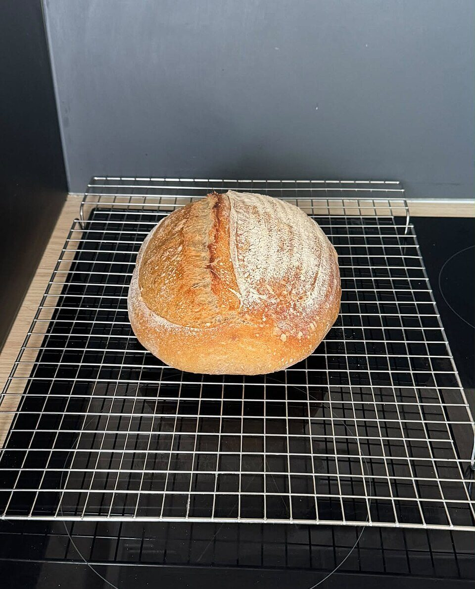
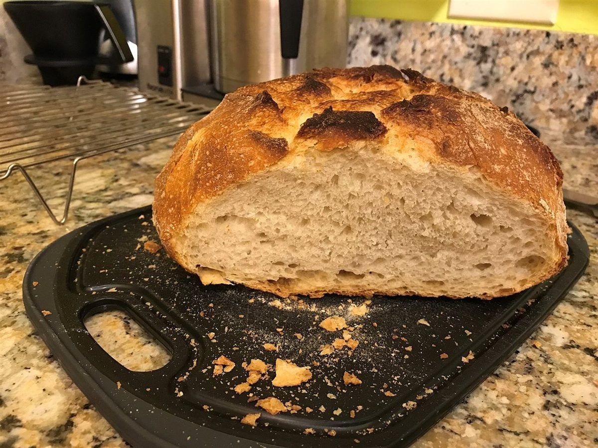
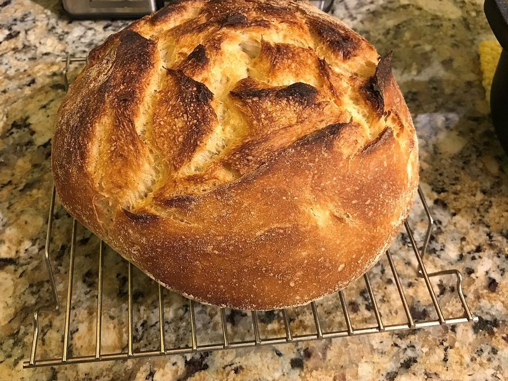
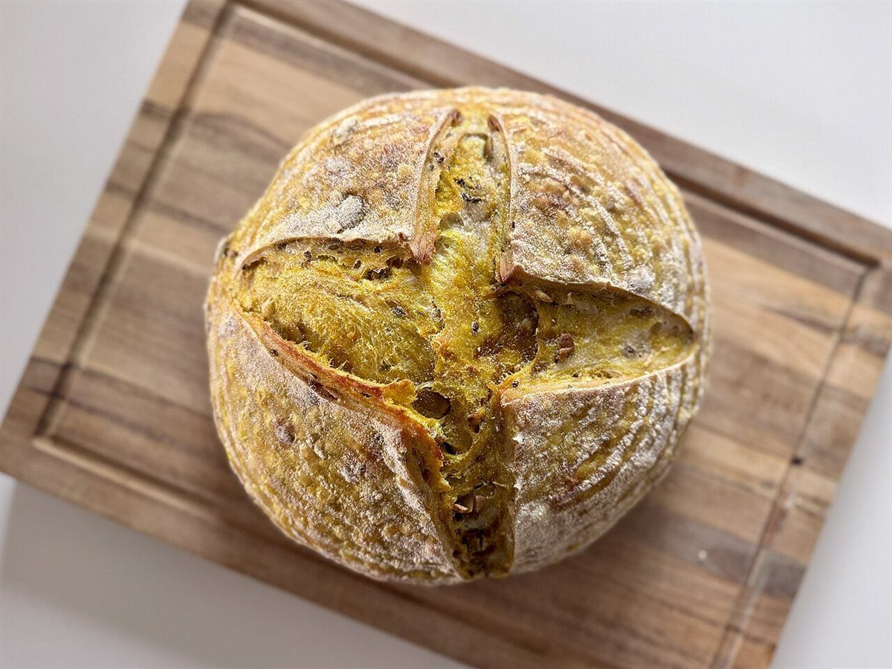

店のこと
お店について
確認できているのは所在地とInstagramのみです。そのほかは準備中です。
制作側の連想
六つの部位のおさらい
トップの配置図に出てくる六つの部位を、ここで短くおさらいします。制作側の連想で、お店の理念・由来とは無関係です。
- 1コラム機械の背骨になる、垂直に立つ太い柱。
- 2ニーコラムの前面に取り付いた、上下に動く台座。
- 3サドルニーの上にのる、前後に動く中間の台。
- 4テーブル加工する材料をのせる、左右に動く最上段の台。
- 5主軸頭先端に工具を取り付けて回す、柱の上の部分。
- 6送りハンドル手でまわして、台を動かすための円いハンドル。
ギャラリー(イメージ)
丸いパンの写真




写真はパンのイメージです。お店のものではありません。
ギャラリー(イメージ)
コーヒー豆の写真


写真はコーヒー豆のイメージです。お店のものではありません。
ご案内
確認できた情報
| 所在地 | 〒916-0022 福井県鯖江市水落町３丁目１３−１３０１−１ |
|---|---|
| 電話 | 準備中 |
| 営業時間 | 準備中 |
| 定休日 | 準備中 |
| ご予約 | 準備中 |
| 駐車場 | 準備中 |
| SNS | Instagram @breadear_sabae |